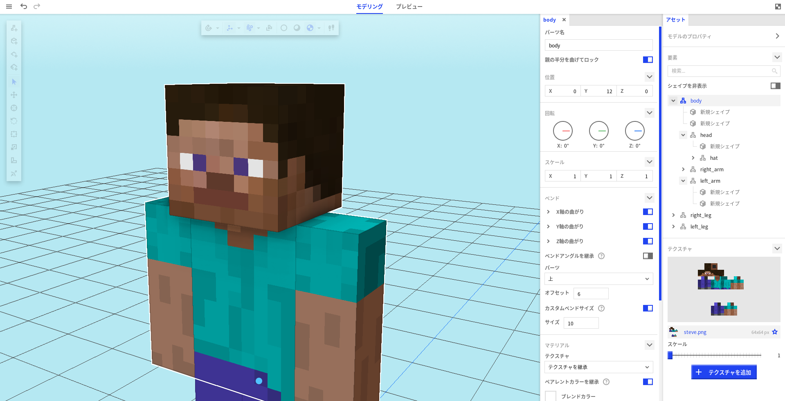

ModelBenchを日本語化にする
ModelBenchとは？
Mine-imator用のモデルファイルを作成するための3Dモデラーソフトウェアです。簡単なモデリングとテクスチャリングツールに加えて、風や曲げなどのMine-imatorのアニメーション機能に対応しています。
ModelBenchはこちらからダウンロードできます。インストーラーではなく、解凍するだけですぐに使えるソフトになってます。
スクリーンショット
日本語化の手順
1.下にあるボタンを押してファイルデータをダウンロードします。
link ダウンロードzip形式の圧縮ファイルですのでダウンロード後解凍してください。
アーカイブに含まれてるフォントはSIL Open Font Licenseで再配布可能であるNoto Sans JPフォントです。
2.DataフォルダをModelBench 1.X.Xフォルダ内にドラッグアンドドロップで移動します。
初めてModelBenchを使われる場合はそのまま置き換えをして大丈夫ですが、ModelBenchの設定を変えてる場合はMB_japanese/Data内の settings.mbdata を削除してから置き換えてください。
「既に同じ名前のファイルが存在します」というダイアログが出ますが、ファイルを置き換えるを選択してください。ModelBenchが起動している場合は一度終了させてください。
3.ModelBenchを起動し、日本語になっていれば完了です。
※手動で日本語に切り替える方法
最初に新規モデルを作成します。左上のmenuを開き、Settingsをクリックします。INTERFACEをクリックし、Languageを日本語(ja-JP)に切り替えれば完了です。
注意事項
●当サイトで配布するファイルデータにつきましては、個人で行った翻訳となります。正式なデベロッパーとは関係ありません。
●日本語ファイルデータの使用は個人利用に限ります。二次配布等は禁止です。
●当サイトに掲載された内容を用いて行った行為による損害等の一切の責任を負いかねますのでご了承ください。
© 2021 kuadr0